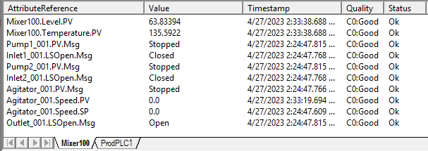
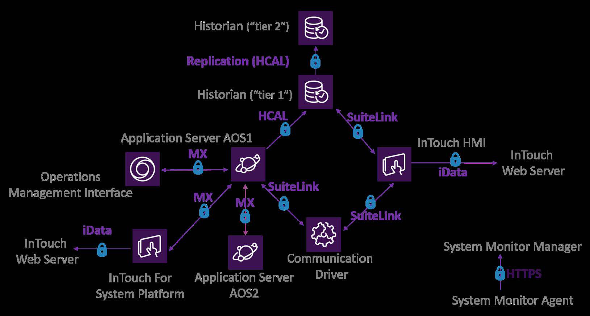
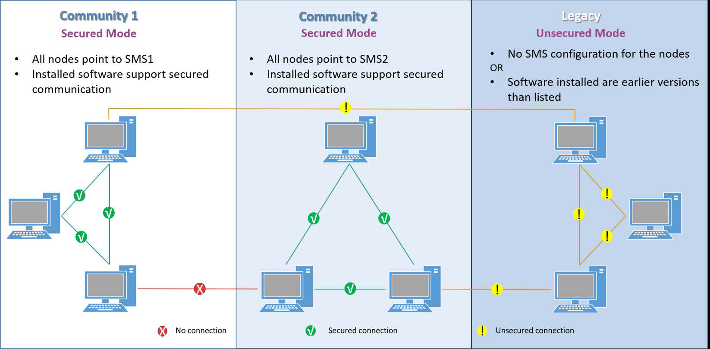

Module 1 — Introduction | Pages 31–40
32. Navigate to C:\Training, select Lab 1 - WatchList, and then click Open.
The Mixer100 and ProdPLC1 watch windows appear with some attributes already added.
You can resize the watch window if needed to view the attributes.
33. In the Mixer100 and ProdPLC1 watch windows, verify that the quality is Good for every
attribute.
Note:
Notify your instructor if any of your attributes display any other quality status.
34. When you are finished reviewing attribute data, close Object Viewer.

The end-to-end communication between software applications (server and client) can be
encrypted and secured to prevent eavesdropping and malicious tampering (also known as: Man-
in-the-Middle) attacks.
To enable encrypted network communication, one of the nodes in the network must be configured
to host and run the System Management Server (SMS). The role of the System Management
Server is to generate, manage, and distribute secure digital certificates used for establishing and
maintaining secure communications.
All other nodes need to be configured to connect to the SMS so they all become part of the same
community.
The SMS does not need to be available at runtime for secure communications to be established.
In fact, once joined to the SMS, a node will not need access to the SMS until it is time to renew the
certificates.
Protocols that Benefit From Encrypted Communication
With encrypted communication, all of the following protocols are secured:
SuiteLink
Message Exchange (MX)
iData
iBrowse
HCAL
This section describes the encrypted communication for end-to-end communication between
server and client software applications.
Software that Supports Secured Communication
The following software supports secured communication:
Application Server 2017 Update 3 and later
InTouch Operations Management Interface 2017 Update 3 and later
InTouch for System Platform 2017 Update 3 and later
*OI Server
InTouch Web Client in 2017 Update 3 and later
Historian 2017 Update 3 and later
Sentinel System Monitor 1.1 for System Platform 2017 Update 3 and later
*Communications from the specific OI Server to any other products listed above can be encrypted.
This is generic and applies to all OI Server versions.

Node-to-Node Communication
Node-to-node communication is unsecured under certain scenarios, including the following:
The version of the software installed on one or more nodes is earlier than 2017 Update 3
(Communication Driver version has no impact)
One node points to a System Management Server, but there is no System Management
Server configured on the other node
There is no System Management Server configured for both nodes
Please note that if one node points to one System Management Server and the other node points
to another System Management Server, there will be NO network connection between the nodes.

Software and Hardware Requirements
The following topics describe software and hardware requirements for System Platform.
Note: Please refer to the readme file that came with your software for more details about
hardware and software requirements, compatibility information, key product notes, and additional
resources. Or, visit the Knowledge & Support Center at https://softwaresupport.aveva.com.
Software Requirements
The following table lists supported and preferred software requirements for various nodes in your
system:
Hardware Requirements
The following tables list minimum and recommended hardware requirements.
For server nodes, such as AppEngine host (Application Objects Server), and the System
Platform IDE (development environment):
For client nodes, such as nodes that run WindowViewer, an Operations Management
Interface application, Historian Client, and remote System Platform IDE:
This section describes system requirements for System Platform software and introduces the
licensing model.
Development
(System Platform IDE)
Galaxy
Repository
Automation
Object Server
Supervisory
Client
Windows Server
Preferred
Preferred
Preferred
Supported
Windows Workstation
Supported
Supported
Supported
Preferred
SQL Server
Not required
Required
Not required
Not required
.NET Framework
Required
Required
Required
Required
Level
Logical
Processors
RAM
Storage
Display
(Resolution)
Network
Speed
Small
Minimum
4
2 GB
100 GB
1024 x 768
100 Mbps
1-25K I/O per node
Recommended
8
4 GB
200 GB
1920 x 1080
1 Gbps
Medium
Minimum
8
8 GB
200 GB
1024 x 768
1 Gbps
25-50K I/O per node
Recommended
16
12 GB
500 GB
1920 x 1080
1 Gbps
Large
Minimum
16
16 GB
500 GB
1024 x 768
1 Gbps
> 50K I/O per node
Recommended
32
24 GB
1 TB
1920 x 1080
Dual 1 Gbps
Level
Logical
Processors
RAM
Storage
Display
(Resolution)
Network
Minimum
4
1 GB
100 GB
1024 x 768
100 Mbps
Recommended
8
4 GB
200 GB
1920 x 1080
1 Gbps
For all-in-one nodes with all products on a single node. An all-in-one node includes
Application Server, InTouch, Historian, Historian Client, and Licensing components.
Licensing
The following topics provide general information about System Platform licensing.
Note: Please contact your local distributor for details about licensing and pricing.
Licensing Models
Two licensing models are available:
Perpetual licensing offers permanent licenses with no expiration date. A perpetual
license applies to a specific purchased software version.
Flex licensing offers subscription-based licenses that are renewed for a specific term.
The license is for credits redeemable to access a wide range of software based on needs
at the time. Visit https://sw.aveva.com/flex-subscription for more information on the Flex
program.
Note: Subscription-based licenses are also available for development consignments (for
example, System Integrator consignments).
For more information on licensing and licensing requirements, contact your local distributor.
Activated Licensing
AVEVA software is licensed-enforced using an activated licensing framework with an activation
code. Management and activation of licenses are performed with the following components, which
are installed as part of the installation of your purchased products:
License Server: Acquires, stores, maintains, and serves licenses. It supports redundancy
and failover.
License Manager: Web-based user interface to access and maintain licenses.
License activation can be performed online or offline. Activation requires Internet access in both
cases. Consult your sales representative for availability of email and phone activation.
Online refers to Internet access on the License Server network.
Offline refers to activate off-site.
Refer to the documentation provided with your software product for more information on using the
License Server and License Manager.
Level
Logical
Processors
RAM
Storage
Network
Small
1K I/O max
Minimum
8
8 GB
200 GB
100 Mbps
Recommended
12
12 GB
500 GB
1 Gbps
Medium
20K I/O max
Minimum
12
16 GB
500 GB
1 Gbps
Recommended
16
32 GB
1 TB
1 Gbps
Large
100K I/O max
Minimum
20
32 GB
2 TB
1 Gbps
Recommended
24
64 GB
4 TB
1 Gbps
Azure Active Directory
Starting with System Platform 2023, user identity authentication and single sign-on via Azure
Active Directory (AD) is supported. After setting Galaxy security to use an external identity
provider, Azure AD can be used to authenticate users. System Platform users can then use their
Microsoft-managed identities to log into the System Platform IDE, Operations Control
Management Console, Operations Management Interface ViewApps, and to perform secured and
verified writes.
Review the sections above for the main topics, step-by-step procedures, and important configuration details.
This is part of the InTouch HMI layer, which integrates with Application Server's Galaxy for a complete visualization solution.
Module 1 — Introduction. AVEVA InTouch for System Platform 2023 Training.
Next: Lesson L05 — InTouch Visualization + Automation Objects